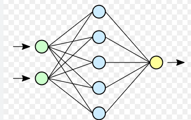

Neural networks are computing systems inspired by the human brain, consisting of interconnected layers of "neurons" that process data.
They form the backbone of modern artificial intelligence and deep learning, powering applications from image recognition to large language models by automatically learning patterns without explicit instructions.
How they work at their core, neural networks pass information through three main types of layers:
Input Layer: Receives raw data (e.g., pixels of an image or words in a sentence).
Hidden Layers: Intermediate layers where mathematical computations, weight adjustments, and pattern recognitions occur.
Output Layer: Produces the final prediction, classification, or result. Each connection between neurons holds a "weight," which dictates how much influence one neuron has on the next. During the training process, the network continuously adjusts these weights based on the errors it makes, slowly learning to improve its accuracy.